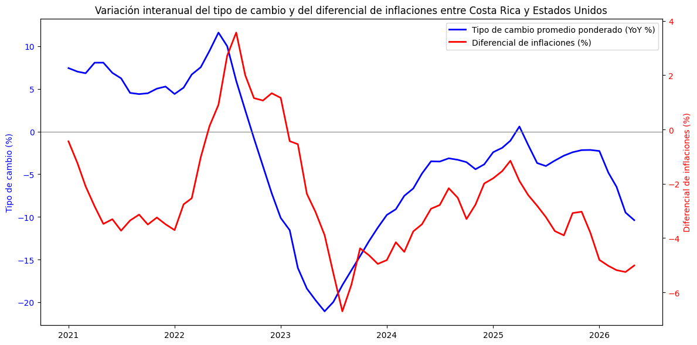

El color de la línea representa el monto total negociado en MONEX. El rojo indica mayores montos transados en la sesión de MONEX del día al que corresponde el precio. Los grises indican menores montos. En la actual tendencia a la baja del precio, las caídas de precio tienden a ocurrir con altos montos transados mientras que las subidas tienden a ocurrir con bajos montos. Una interpretación es que los comerciantes de divisas no apoyan con sus transacciones subidas de precio, no parecen creer que una subida en precio signifique el inicio de una tendencia alcista; en cambio, parecen asustarse cuando el precio cae y transan mucho, quizá en la creencia de que la caída puntual anuncia una tendencia bajista a futuro.

La inflación mensual anualizada de Costa Rica en mayo de 2026 fue de 3.3% mientras que la de Estados Unidos fue de 7.8%. La inflación interanual en en mayo creció un 0.7% en Costa Rica y un 0.4% en Estados Unidos. En suma, si bien la deflación de Costa Rica está disminuyendo, la inflación en Estados Unidos está aumentando de modo que la presión a la apreciación del colón no ha desaparecido ante el aumento del precio del petróleo.